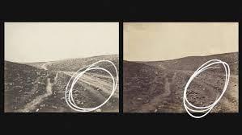
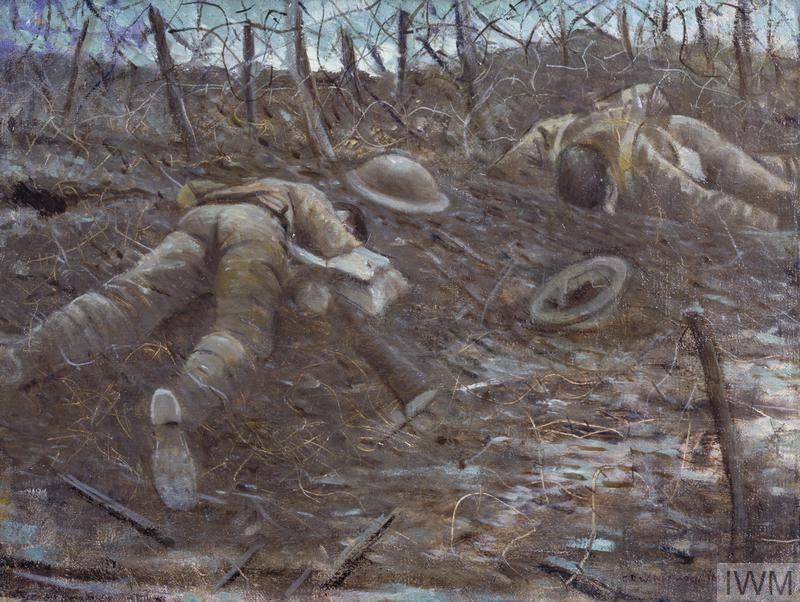
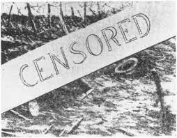

Art Historians use tapestries and paintings to decipher how wars were fought in different time periods. With this collection, we can go deeper into War Art and observe changes in how artists and photographers chose to depict battles and massacres based on the cultural norms at the time. How they used art to convince both their own populations that it was a noble fight and the enemy that they would win.
Why?
I chose to embark on this intellectual challenge as I want to broaden my knowledge of art. I haven’t ever really considered the finer details of art and, with all the news and images of war in Ukraine at the moment, I thought it would be interesting to see how others used to show and see conflict. I wanted to challenge myself and learn something new during this process.
- Leo Wilkin, Curator
The Code 👨🏻💻
The code for this project was compiled and written in HTML and CSS by Leo Wilkin, with the assistance of W3Schools, an invaluable resource. I chose to submit it in a digital, webpage medium as this is something I'm confident with, and something that I can apply new knowledge - war art - to something that I already know.
To see the code for this project, visit the GitHub repository.
Painting Summary: This painting commemorates the February 1525 battle between the armies of the Holy Roman Emperor, Charles V, and the King of France, Francis I. The Battle of Pavia was one of many between 1521 and 1529 about the issue of control over the Lombardy region in northern Italy, a strategic communication point between Spain, Germany, and the Netherlands. The imperial army is depicted at the lower left; the defeated French are identified by their flag, white lilies on a blue field.
Curator’s Note: “This first piece for my collection embodies themes like large panoramas, rich representation of different parties, and descriptive backgrounds. The themes of this period are accentuated by the numerous, and wide-scale mini aggressions that collate into one splash of rich, accentuated colour. This would have been commisioned as a celebration of the victory of the Hold Roman Emperor, Charles V; and his defeat over the French.”
The Storming of the Fortress of Stampace in Pisa
Artist: Giorgio Vasari
Date: 1568-1571
Method: Fresco, painting
Movement of Art: Mannerism
Painting Notes: In 1499 the Rock of Stampace was captured by the Florentines. This fresco depicts the battle between the resident Picarians and the invading Florentines. The artwork is full of precise detail since Battista Naldini, Giorgio Vasari’s assistant had been sent to the site of the battle to draw a series of sketches and views.
Curator's Note: “This Italian fresco wall painting, which currently resides in the Palazzo Vecchio Museum, Comune di Firenze, depicts an epic battle in which the Florentines were able to take the Rock of Stampace. At this period, art depicting war is very vivid and full of detail and colour. The depicted characters are mostly unclothed showing the lack of armour in this period. The scene is most likely glorified as the victors painted the fresco, as the perspective is skewed on an angle, and the horses’ hindquarters look larger than in real life.”
- Large frescoes depicting lavish, fruitfully coloured battles.
- Soldiers in parts unclothed, unarmoured.
- Larger, more opulent as a stereotype
- Background in view, quite far into distance.
- Standard in view in top right corner
Deborah and Barak against Sisera
Artist: Juan de la Corte
Date: 1630-1660
Method: Painting, oil-on-canvas
Movement of Art: Baroque
Painting Notes: This scene of war can be identified among the many fables and stories of this type in the Bible. In this image, the prophetess Deborah summoned the warrior Barak so that he could fight against Jabin, King of Canaan, whose troops were commanded by Sisera. As is standard in the work of this artist of this time period, the depiction is not exactly replicated based on the biblical text, for example soldiers in boats located in an imaginary setting and a city with a port, towers, walls and buildings located high up in the painting area which is similar to the cities in other works at this time.
Curator’s Notes: “Moving north to the Spanish, this painting – although it depicts a scene from the Bible – is still an integral piece as it gives us greater understanding on what the artists and noble courts at the time depicted war as, and what they believed aggressive religion to be, and how they fought. This specimen in our collection draws on similar techniques utilised by Vasari such as light brown tones which would have represented the availible pigments , and still this underlying theme of wide panoramas with detailed massed of forces battling victoriously and displaying evident pride while holding standards. May I for one moment draw your attention to the character facing towards the sky with their arms open? This is a prime example of the holy aspect of medieval warfare, how there would be blessings to higher beings, and they regarded the quality of their sacrifice as testament to whether they would defeat the enemy.”
The Battle of Racławice Panorama
Artist(s): Jan Styka, Wojciech Kossak
Date: 1839-1894
Method: Cyclorama, oil-on-canvas
Movement of Art: Panorama, 19th century
Painting Notes: The Raclawice Panorama is a 15x114 metre cycloramic painting depicting The Battle of Raclawice. The painting is one of only a few preserved representations of a genre of 19th-century mass pop-culture, and the oldest in Poland. The project was initiated as a patriotic commemoration of the 100th anniversary of the Battle of Raclawice, and it was first shown at the General National Exhibition in Lviv (Ukraine) in 1894. Due to its delicate nature; both physical and symbolical, the panorama was transferred into hiding in Wroclaw, Poland during WWII where it stands today in a custom building.
Curator's Notes: “This is the only painting in this curation that I have experienced first-hand. I saw this in Poland at the Panorama Museum, where it lies today. It is an artistic phenomenon and takes your breath away from realising that it only took nine months to fashion. Modern advancements of lighting and presentation have improved its appearance; and the addition of physical artificial turf; and some decorative pieces (see annotated image below) give the cyclorama a sense of depth and distance. The artistic perspectives to this piece do differ from the previous pieces – for example, key figures are highlighted and more descriptive, while keeping a very solid sense of depth and distance. The colours are notably blander, and monotone compared to the previous rich hues of brown and orange.”
I. Original painting blending in to the artificial turf
II. 3D landscape diorama and turf bordering the painting
III. Unique addition of models to strengthen depth
The Valley of the Shadow of Death
Artist: Roger Fenton
Date: 1855
Method: Albumen print, photography
Movement of Art: Crimean War, Photography, Social Sciences
Photograph Notes: Photograph of a ravine in the Crimea known as the Valley of the Shadow of Death. The ravine is littered with cannonballs fired from the Russian defences. This iconic image of war was photographed by Fenton in April 1855. The ravine, named by British soldiers using a phrase from the 23rd Psalm, shows the desolate landscape in which the battles of the Crimean War were fought. The photograph was difficult to set up, and Fenton later wrote that ‘it was plain that the line of fire was upon the very spot I had chosen’. Fenton was forced to move 100 yards from his chosen spot to avoid the cannon fire, but ‘after this no more came near, though plenty passed on each side’.
Curator’s Notes: “This evocative piece of war photography was captured during the Crimean War in 1855. This was a monumental shift in transferring views and atmospheres of places, as the Crimean War was the first to be documented by exposure camera. When first exhibited by the artist in London circa 1856 the press hailed it as a revolutionary breakthrough, and what a descriptive, moving picture it was. This artifact strays from my theme of paintings, although I felt that this needed to be included because of its deeper significance. The photo is devoid of any life form, which represents the ‘valley of death’ aspect well. The cannonballs situated on the right of the picture on the road unlock a deeper meaning to my overarching theme of depiction of war art as photo historians have proved that this photo was staged (see comparison photo below). Fenton reportedly took two photos, and the second one lacked the ‘wow’ factor – the cannonballs – that the British public valued. This provokes an interesting chain of thought, how without the cannonballs the photo would just be viewed as a desolate valley, but with this staged attempt it would be lauded as an ‘accurate’ depiction of what the situation was actually represented as. I think the motives around this staged attempt would be to show the British public what we were 'fighting' for and to give a sense of patriotism; while also showing to the invading army that we had more advanced technology, and that we were defeating you - that your cannonballs had missed and you were wasting them.”

While researching for this image I came across an interesting YouTube video, which I must credit here. If you are interested in learning more about this staged photograph, watch this.
Paths of Glory

Artist: C. R. W. Nevinson
Date: 1917
Method: Oil-on-canvas
Movement of Art: First World War, 20th century
Painting Notes:
In one of Nevinson's most famous paintings, we see the bodies of two dead British soldiers behind the Western Front. 'Paths of Glory' was famously censored by the Lieutenant - Colonel A N Lee. His concern presumably being the representation of the rotting and bloated British corpses at this stage in the war. The decision was confirmed three months before the opening of his exhibition at the Leicester Galleries in 1918 but Nevinson still included the painting with a brown paper strip across the canvas, blatantly inscribed with the word 'censored'. The painting now lies in the Imperial War Museum’s collection.
Curator's Notes: “At the end of the First World War, we see a great shift in how artists depict war. Now the groups of soldiers are exceedingly small like the two fallen soldiers shown below. War now seems like a great burden. War is no longer plentiful, and with the event of new arsenals of weapons and chemical warfare, deaths are painful and shallow. The tones of this painting are much darker, and the string brush-stroke techniques used by Nevinson represent the barbed wire that the two deceased soldiers have wrapped themselves in. If you unfocused your eyes while looking at the painting, the camouflage fatigues worn by the soldiers blend into the mud and soil, which I think the artist specifically did to represent the circle of life and death, and how some day they will degrade down into the soil and return to nature. I think that this painting was censored by Lt. Col. Lee because it depicted what war really was about, death, pain, and misery - compared to what they wanted it to be depicted as.”

Closing
You've reached the end of this project. If you're having difficulty seeing any pictures, please email WILKINL. Thank you in advance for your consideration, and for your attentive-ness. To obtain an accessible Word document version, please email WILKINL.
This site uses required Google Analytics cookies to maintain performance, and ensure that this site remains online.